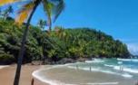
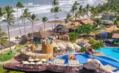
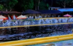
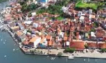
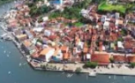
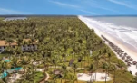
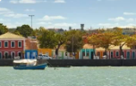
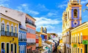

A razão de nossa existência é ver a sua satisfação. Somos um receptivo turístico que se destaca no mercado local pela lealdade e respeito aos parceiros e clientes, aliado a qualidade nos serviços, oferecendo a cada cliente uma experiência única.
Passeios City Tour pelos principais pontos turisticos da cidade...
Passeios na praia do pé da serra e cachoeira do Tijuípe...
Passeios da Fazenda de cacau com a fábrica de chocalates e tour...
Passeios pelas praias do sul de Ilhéus, bairro indígena de Olivença
Destinos com saída de Ilhéus

ItacaréVia BA-001, 1h16min |

CanabravaVia estrada Una/Ilhéus, 32min |

TororombaVia Estrada Una/Ilhéus, 24min |

CamamuVia BA-001, 1h43min |

Morro de São PauloVia BA-001, 3h52min + 30min de lancha |

ComandatubaVia Estrada Una/Ilhéus, 1h21min |

Porto SeguroVia BR-101, 4h51min |

SalvadorVia BR-101, 6h37min |